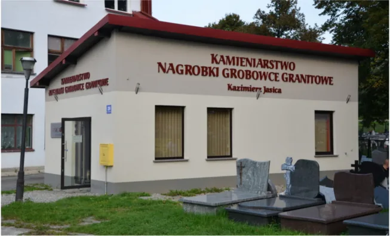

Biuro i ekspozycja
ul. Ks. Łazarskiego 20, 34-600 Limanowa
obok cmentarza
Biuro i ekspozycja są tuż obok cmentarza w Limanowej. Zakład produkcyjny mieści się w Mordarce.

ul. Ks. Łazarskiego 20, 34-600 Limanowa
obok cmentarza